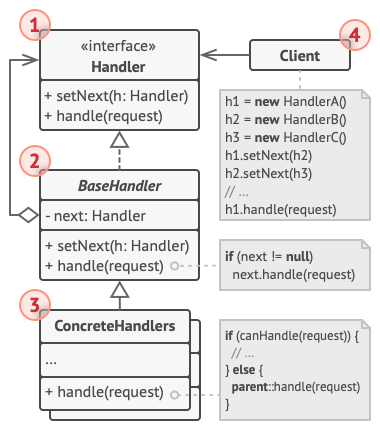
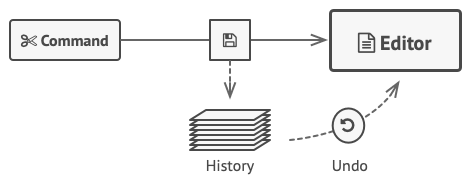
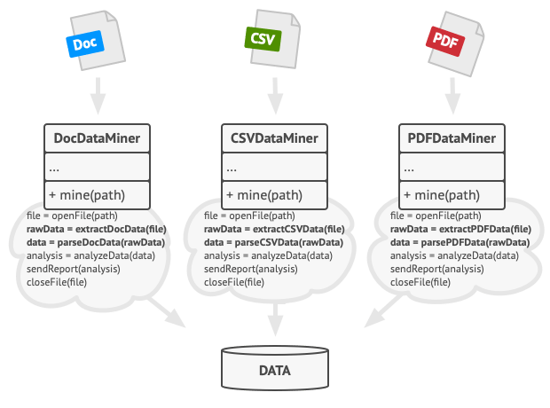

Софтуерните шаблони представляват най-добрите практики, които се използват от опитните обектно-ориентирани софтуерни разработчици. Тези шаблони са решенията на основни проблеми, с които се сблъскват софтуерните разработчици по време на своята работа. Откриването на тези решения е изисквало изключително дълго време, изпълнено с прилагане на метода проба-грешка от не малко разработчици.
Особености
Следните характеристики допълват накратко какво представляват шаблоните [1]:
В софтуерното инженерство шаблони са основни решения на често срещани проблеми в даден контекст на софтуерния дизайн.
Шаблонът не е завършен дизайн, който може директно да бъде трансформиран в програмен или машинен код. Той е описание или, както идва от самото му название, шаблон за решението на даден проблем в най-различни ситуации, т.е. може да бъде използван многократно.
Софтуерните шаблони предоставят решения на всеобщи проблеми, което помага с поддръжката, разширяемостта и "разкачаемостта" на кода.
Колкото повече знаем за тях, толкова по-лесно става разрешаването на проблемите, с които се сблъскваме.
Софтуерните шаблони значително могат да забързат процеса на разработка като предоставят изпробвани и доказани образци. Ефективния софтуерен дизайн изисква разглеждането на проблеми, които може да не станат достатъчно ясни в началния етап от имплементацията. Преизползването на софтуерните шаблони помага с предотвратяването на едва доловими грешки, които могат да доведат до огромни проблеми, както и подобрява четимостта на кода от програмистите и архитектите, запознати с шаблоните.
Често хората са наясно как да прилагат дадени софтуерни дизайн техники за определени проблеми. Тези техники обаче са трудно приложими в по-широк кръг от проблеми. Софтуерните шаблони предоставят основни решения, документирани във формат, който не изисква специфики на даден проблем.
В допълнение, шаблоните позволяват на разработчиците да комуникират, използвайки добре познати, добре разбрани наименования в софтуерните взаимоотношения. Често срещани шаблони могат да претърпят подобрения с течение на времето, които да ги направят по-укрепнали от ad-hoc дизайните. [2]
Видове софтуерни шаблони
Фигура 1. Диаграма на видовете софтуерни шаблони. [1]
Софтуерните шаблони се разделят на следните три вида [2]:
Шаблони за създаване - идеята им се основава на инстанциирането на класове. Този вид може да раздели на шаблони за създаване на класове и шаблони за създаване на обекти. Докато създаващите класове се възползват ефективно от наследяването за инстанцииращия процес, създаващите обекти използват делегация за изпълнение на работата си.
Структурни шаблони - идеята им се основава на композицията на класове и обекти. Класовите шаблони се възползват от наследяване за композиция на интерфейсите. Обектните шаблони дефинират начини за композиция на обектите с цел получаване на нова функционалност.
Шаблони за поведение - идеята им се основава на комуникацията между обектите на класовете. Поведенческите шаблони имат за основна цел да разглеждат комуникацията между различните инстанциирани обекти в една система.
В текущия документ ще се спрем само на шаблоните за поведение като ще разгледаме някои от основните типове, какви проблеми решават, както и ще дадем малко примери за имплементацията им в код, написан на PHP.
Какво са шаблоните за поведение?
Поведенческите шаблони описват начина, по който обектите и класовете взаимодействат и разпределят отговорностите помежду си. Всеки шаблон абстрахира някакво действие, което програмистите искат даден обект или клас да възприема. Променяйки обекта или класа, можете да промените използвания алгоритъм, засегнатите обекти или поведението и въпреки това да запазите основния интерфейс за клиентските класове.
Добър набор от поведенчески шаблони на разположение ще ви позволят да разрешите най-различни предизвикателства от страна на дизайна на една обектно-ориентирана система. Някои сред тях биват номериране на списъци, въздействане на промяна в състоянието на обект, сериализация и десериализация на обекти без пробив в енкапсулацията на данните.
Шаблоните за поведение засягат алгоритмите и комуникацията между тях. Операциите, които изграждат един алгоритъм, могат да бъдат разпределени на различни класове, изграждайки сложна подредба, която може да се окаже трудна за управление. Поведенческите шаблони обхващат начини за изразяване на разделението на операциите между класовете и оптимизират управлението на комуникацията. А именно ключът към усвояването на този тип шаблони е комуникацията. Фокусът се измества от обектите и класовете, които съставят един софтуерен шаблон, към комуникацията между тях. [3]
В текущия документ ще разгледаме няколко основни поведенчески шаблона:
Верига отговорности (Chain of Responsibility)
Идеята на шаблона е да се избегне тясната свързаност на подател на заявка с този, който ще я обработва, като се дава възможност на повече от един обект да я обработят. Обектите получатели се поставят в една верига и заявката се предава по нея, докато някой от тях я обработи. [4]
Казус
Представете си, че разработвате онлайн система за поръчки. Искате да ограничите достъпа към системата така, че само удостоверени потребители могат да създават поръчки. Съща така, потребители с администраторски права трябва да имат пълен достъп до всички поръчки. След кратко планиране осъзнавате, че тези проверки трябва да се извършват последователно. При всяка заявка на потребител, съдържаща информация за него, приложението се опитва да го удостовери и ако не успее, заявката се отхвърля.
През следващите няколко месеца имплементирате още няколко подобни проверки:
Един от колегите ви предложил, че не било безопасно да се подават необработени данни директно към системата, затова сте добавили допълнителна валидация за почистване на заявката.
По-късно, някой забелязал, че системата е уязвима на груба сила при разбиване на паролата. За предотвратяването на този проблем вие сте добавили проверка, която филтрира повторение на неуспешни заявки от идентичен IP адрес.
Някой друг предложил, че може да се забърза системата чрез кеширане на резултати от заявки, съдържащи идентични данни. Затова сте добавили още една проверка, която позволява само на некеширани заявки да постъпват в системата.
Фигура 3. Допълнителни филтриране на клиентски заявки. [5]
Кодът на филтрите, който първоначално си беше бъркотия, с всяка нова функционалност заприлича все повече на спагети. Промяната в една проверка понякога трошала другите, а най-лошото от всичко било, когато се наложило да преизползвате проверките за други компоненти на системата, което предположило дублиране на части от кода. Изобщо системата се е станала прекалено трудна за разбиране и скъпа за поддръжка. Мъчели сте се с кода известно време, докато един ден сте решили да го рефакторирате напълно .[5]
Предложение
Като много други шаблони за поведение и Chain of Responsibility разчита преобразуването на дадено поведение в независими обекти наречени handlers. В нашия случай всяка проверка трябва да си има отделен клас с метод за нейното изпълнение. Заявката, заедно с данните си, се подава на този метод като аргумент.
Този шаблон предполага свързването на тези handler-и във верига. Всеки от тях си пази референция към следващия във веригата. В допълнение, всеки предава заявката нататък при нейната обработка. Така тя има възможността да мине през всеки handler, докато всеки е имал шанса да я обработи. А най-хубавото нещо е, че всеки от тях може да реши дали да не предаде заявката надолу по веригата. Същото се отнася и за системата от нашия пример. Стига заявката да съдържа правилните данни, всички handler-и ще изпълнят своята задача, била тя установление или кеширане.
Съществува и малко по-различен подход (а и по-каноничен), при който ако handler реши, че може да обработи заявката, не я предава нататък по веригата. Т.е. или само един обработва заявката, или нито един. Този подход е често срещан при обработката на събития в един графичен потребителски интерфейс. Например, когато потребител натисне бутон, събитието травърсира нагоре по веригата от GUI елементи, която започва с него, минава през всички негови контейнери (форми, панели) и се озовава в главния прозорец. Събитието се обработва от първия елемент, който е способен да го направи. Хубавото на примера е, че показва как може да се изведе верига от дърво от обекти.
Изключително важно е всички handler класове да имплементират един и същ интерфейс. Всеки конкретен handler обект се интересува само дали съседа му съдържа execute метод. По този начин може да изграждате вериги по време на изпълнение, използвайки различни handler без да бъдат тясно свързани с конкретните им класове. [5]
Структура

Фигура 6. UML Диаграма на примерна Верига отговорности. [5]
Handler-ът декларира общ за всички обработващи обекти интерфейс. Обикновено съдържа един единствен метод за обработка на заявки, но понякога може да съдържа и метод за добавяне на следващия обект във веригата.
BaseHandler е клас по избор, в който може да се сложи код, общ за всички handler-и. По принцип този клас дефинира поле, съдържащо референция към следващия обект. Клиентите могат да изградят верига, подавайки handler към конструктора или setter-а на предишния такъв. Класът може също да имплементира държание по подразбиране - да подаде изпълнението на следващия обект след проверка за съществуването му.
Клиентът (Client) може да изгражда постоянни или динамични вериги, в зависимост от логиката на приложението. Забележете, че заявка може да бъде насочена към който и да е handler във веригата, не е задължително да е първия.
Същинските обработващи обекти (ConcreteHandlers) съдържат кода за обработката на заявките. При получаването на заявка, всеки от тях трябва да реши дали да я обработи и дали да я подаде нататък в опашката. По принцип, обработвателите са самостоятелни и неизменими, получават всички необходими данни чрез конструктора.
Плюсове и минуси
Можете да управлявате реда на обработка на заявките.
Принцип за единствена отговорност. Можете да разделите класовете, които извикват операциите, от другите, които ги изпълняват.
Принцип отворен/затворен. Можете да въведете нови handler-и в приложението без да се притеснявате, че ще счупите клиентския код.
Някои заявки може да останат необработени.
Примерна имплементация
<?php
/**
* Интерфейсът Handler декларира метод за изграждане на веригата от обработващи обекти.
* Също така декларира метод за обработка на заявка.
*/
interface Handler
{
public function setNext(Handler $handler): Handler;
public function handle(string $request): ?string;
}
/**
* Поведението по подразбиране може да бъде имплементирано в базов handler клас.
*/
abstract class AbstractHandler implements Handler
{
/**
* @var Handler
*/
private $nextHandler;
public function setNext(Handler $handler): Handler
{
$this->nextHandler = $handler;
// Връщайки handler от тук ще ни позволи да ги навържем по този начин:
// $monkey->setNext($squirrel)->setNext($dog);
return $handler;
}
public function handle(string $request): ?string
{
if ($this->nextHandler) {
return $this->nextHandler->handle($request);
}
return null;
}
}
/**
* Всички основни Handler-и или обработват заявка, или я пускат надолу по веригата.
*/
class MonkeyHandler extends AbstractHandler
{
public function handle(string $request): ?string
{
if ($request === "Banana") {
return "Monkey: I'll eat the " . $request . ".\n";
} else {
return parent::handle($request);
}
}
}
class SquirrelHandler extends AbstractHandler
{
public function handle(string $request): ?string
{
if ($request === "Nut") {
return "Squirrel: I'll eat the " . $request . ".\n";
} else {
return parent::handle($request);
}
}
}
class DogHandler extends AbstractHandler
{
public function handle(string $request): ?string
{
if ($request === "MeatBall") {
return "Dog: I'll eat the " . $request . ".\n";
} else {
return parent::handle($request);
}
}
}
/**
* По принцип клиентският код е подходящ за работа с един handler. В повечето
* случаи даже няма представа, че той е част от верига.
*/
function clientCode(Handler $handler)
{
foreach (["Nut", "Banana", "Cup of coffee"] as $food) {
echo "Client: Who wants a " . $food . "?\n";
$result = $handler->handle($food);
if ($result) {
echo " " . $result;
} else {
echo " " . $food . " was left untouched.\n";
}
}
}
/**
* Другата част от клиентския код игражда същинската верига.
*/
$monkey = new MonkeyHandler();
$squirrel = new SquirrelHandler();
$dog = new DogHandler();
$monkey->setNext($squirrel)->setNext($dog);
/**
* Клиентът би трябвало да може да изпрати заявка към който и да е handler,
* не само към първия във веригата.
*/
echo "Chain: Monkey > Squirrel > Dog\n\n";
clientCode($monkey);
echo "\n";
echo "Subchain: Squirrel > Dog\n\n";
clientCode($squirrel);
?>
Код 1. Примерна имплементация на Верига отговорности. [15]
Изпълнението на горния код би трябвало да доведе до подобен изход:
Chain: Monkey > Squirrel > Dog
Client: Who wants a Nut?
Squirrel: I'll eat the Nut.
Client: Who wants a Banana?
Monkey: I'll eat the Banana.
Client: Who wants a Cup of coffee?
Cup of coffee was left untouched.
Subchain: Squirrel > Dog
Client: Who wants a Nut?
Squirrel: I'll eat the Nut.
Client: Who wants a Banana?
Banana was left untouched.
Client: Who wants a Cup of coffee?
Cup of coffee was left untouched.
Команда (Command)
Идеята на шаблона е да се енкапсулира заявка като обект и по този начин клиентите да се параметризират с различни заявки, опашка или история от заявки и да поддържат операции за отмяна. [4]
Казус
Представете си, че работите върху нов текстов редактор. Токущата ви задача е да създадете лента с инструменти, която има куп бутони за най-различни операции в редактора. Създали сте клас Button, който може да се използва както за бутоните на лентата с инструменти, така и за различните диалогови прозорци.
Въпреки че всички бутони изглеждат подобни, всеки един от тях извършва различни операции. Къде бихте поставили кода за различните click handler-и? Най-простото решение е да се създадат множество подкласове за всяко място, където е използван бутона, които да съдържат съответната функционалност при натискане на бутона.
Фигура 8. Множество подкласове на един базов бутон. [6]
Бързо ще осъзнаете обаче, че този подход има сериозни недостатъци. Първо, ще имате огромен набор от подкласове, което по принцип би било наред, ако не рискувахте да се счупи нещо в тях при всяка модификация на базовия клас. Накратко, GUI кода е станал прекалено зависим на кода с бизнес логиката.
Фигура 9. Дупликация на код измежду елементите. [6]
А ето и най-грозната част. Някои операции, например копиране/поставяне на текст, би трябвало да бъдат извикани от множество места. Примерно, потребител може да натисне бутона Copy на лентата с инструменти, да копира нещо през контекстното меню или просто да натисне Ctrl + C.
В началото, когато приложението имаше само лентата с инструменти, нямаше проблем да се имплементират операциите в различни подкласове, т.е. кодът за копиране да се намира в CopyButton класа беше наред. Обаче, с добавянето на контекстните менюта, клавиатурните комбинации и други неща, се налага да дублирате кода на операцията в много класове или менютата да се направят подвластни на бутоните, което е още по-лошо. [6]
Предложение
Добрият софтуерен дизайн се базира на приципа за разделяне на отговорностите, който обикновено означава разбиване на приложението на слоеве. Най-често срещания пример: слой за графичния потребителски интерфейс и друг слой за бизнес логиката. GUI слоят отговаря за рендерирането на картината, улавянето на вход от потребителя и показване на резултати, произтичащи от взаимодействието между потребителя и приложението. Обаче, когато става дума за нещо важно като изчисляване на траекторията на Луната или съставяне на годишен доклад, графичният слой делегира работата към съответния слой от бизнес логиката.
В код би изглеждало по следния начин: GUI обект извиква метод на обект от бизнес логиката, подавайки му някакви аругменти. Този процес по принцип се описва като изпращане на заявка.
Фигура 10. Директна връзка между потребителския интерфейс и бизнес логиката. [6]
Шаблонът Команда предполага, че GUI обектите не трябва да изпращат пряко тези заявки. Вместо това, трябва да се извличат детайлите от самата заявка, като обекта получател, името на метода и списък с аргументите, в отделен команден клас, който има метод за изпълнение на тази заявка.
Командните обекти играят ролята на връзки между различните графични интерфейси и обектите с бизнес логиката. Оттук нататък, GUI обектът няма нужда да знае кой ще получи заявката му и как тя ще бъде преработена. Той просто задейства командата, която ще изпълни цялата работа.
Фигура 11. Командна връзка между потребителския интерфейс и бизнес логиката. [6]
Следващата стъпка е управляващите обекти да имплементират един и същ интерфейс. По принцип той съдържа един метод за изпълнение, без аргументи. Интерфейсът служи за decoupling на различните обекти. По този начин можете да сменяте между различните управляващи обекти, свързани с подателя, ефективно изменяйки неговото поведение по време на изпълнение.
Може би сте забелязали, че изпуснахме аргументите на самата заявка. Това е така, защото се предполага, че командата ще бъде конфигурирана предварително с подходящите данни или ще бъде способна да се приспособи с тях.
Фигура 12. Графичният интерфейс делегира работата си към командите. [6]
Нека се върнем на текстовия редактор. След прилагане на шаблона Команда вече не са ни нужни всички онези подкласове бутони, които да имплементират различното поведения при натискане. Можем просто да добавим референция в базовия Button клас към командния обект и бутонът да го извиква при натискане.
Така за всяка възможна операция ще имплементирате управляващ клас, който да свържете със съответните бутони, в зависимост от тяхното предназначено поведение. Останалите GUI елементи (менюта, клавишни комбинации, цели диалози) могат да се имплементират по същия начин, избягвайки нежеланата дупликация на код.
Като резултат, командите осигуряват удобен междинен слой, който намалява свързаността между графичния интерфейс и бизнес логиката. [6]
Класът подател Sender (в нашия случай Invoker) има грижата да инициира заявките. Този клас държи референция към командния обект, чиято команда използва за комуникация с получателя. Добре е да се отбележи, че по принцип подателят не отговаря за създаването на командния обект, за това се грижи клиентът.
Интерфейсът Command обикновено съдържа единствен метод за изпълнение на командата.
Конкретни команди имплементират най-различни видове заявки. Тяхната задача не е да изпълняват самата команда, а да извикат обект от бизнес логиката, който има тази грижа. Често за опростяване на кода тези два обекта могат да се слеят. Нужните параметри за изпълнение на метод от получателя могат да се декларират като полета в конкретните команди. Също могат да се направят immutable като се инициализират само в конструктора
Класът Receiver съдържа някаква бизнес логика, той може да бъде всякакъв обект. Повечето команди просто предават заявката към него, а той от своя страна върши същинската работа.
Клиентът (Client) създава и настройва конкретните командни обекти, като ги инициализира с необходимите параметри и съответния получател чрез констурктора. След което може да ги навърже с няколко податели.
Плюсове и минуси
Принцип за единствена отговорност. Можете да разделите класовете, които извикват операциите, от другите, които ги изпълняват.
Принцип отворен/затворен. Можете да въведете нови команди в приложението без да се притеснявате, че ще счупите съществуващ код.
Можете да имплементирате undo/redo.
Можете да имплементирате забавено изпълнение на операции.
Можете да изграждате сложни команди от множество по прости такива.
Кодът може да се усложни, тъй като добавяме допълнителен слой между податели и получатели.
Примерна имплементация
<?php
/**
* Command интерфейсът декларира метод за изпълнение на команда.
*/
interface Command
{
public function execute(): void;
}
/**
* Някои команди може да имплементират проста бизнес логика.
*/
class SimpleCommand implements Command
{
private $payload;
public function __construct(string $payload)
{
$this->payload = $payload;
}
public function execute(): void
{
echo "SimpleCommand: See, I can do simple things like printing (" . $this->payload . ")\n";
}
}
/**
* Някои команди може да делегират по-сложни операции към други обекти получатели.
*/
class ComplexCommand implements Command
{
/**
* @var Receiver
*/
private $receiver;
/**
* Данни, нужни за изпълняването на методите на получателя.
*/
private $a;
private $b;
/**
* Сложните команди може да приемат един или няколко обекти-получатели
* заедно с необходимите контекстни данни чрез конструктора.
*/
public function __construct(Receiver $receiver, string $a, string $b)
{
$this->receiver = $receiver;
$this->a = $a;
$this->b = $b;
}
/**
* Командите могат да делегират към който и да е метод на получателя.
*/
public function execute(): void
{
echo "ComplexCommand: Complex stuff should be done by a receiver object.\n";
$this->receiver->doSomething($this->a);
$this->receiver->doSomethingElse($this->b);
}
}
/**
* Receiver класовете съдържат важната бизнес логика. Те знаят как да
* изпълняват всякакви операции, свързани с изпълняването на някаква заявка.
* Всъщност, всеки клас може да играе ролята на Receiver.
*/
class Receiver
{
public function doSomething(string $a): void
{
echo "Receiver: Working on (" . $a . ".)\n";
}
public function doSomethingElse(string $b): void
{
echo "Receiver: Also working on (" . $b . ".)\n";
}
}
/**
* Invoker е закачен за една или няколко команди, към които да препраща заявките.
*/
class Invoker
{
/**
* @var Command
*/
private $onStart;
/**
* @var Command
*/
private $onFinish;
/**
* Инициализация на командите.
*/
public function setOnStart(Command $command): void
{
$this->onStart = $command;
}
public function setOnFinish(Command $command): void
{
$this->onFinish = $command;
}
/**
* Invoker класът не е подзависим на конкретните команди или класовете-получатели.
* Той просто подава заявката индиректно на получателя чрез изпълнението команда.
*/
public function doSomethingImportant(): void
{
echo "Invoker: Does anybody want something done before I begin?\n";
if ($this->onStart instanceof Command) {
$this->onStart->execute();
}
echo "Invoker: ...doing something really important...\n";
echo "Invoker: Does anybody want something done after I finish?\n";
if ($this->onFinish instanceof Command) {
$this->onFinish->execute();
}
}
}
/**
* Клиентският код може да параметризира Invoker с всякакви команди.
*/
$invoker = new Invoker();
$invoker->setOnStart(new SimpleCommand("Say Hi!"));
$receiver = new Receiver();
$invoker->setOnFinish(new ComplexCommand($receiver, "Send email", "Save report"));
$invoker->doSomethingImportant();
?>
Код 2. Примерна имплементация на Команда в PHP. [16]
Изпълнението на горния код би трябвало да доведе до подобен изход:
Invoker: Does anybody want something done before I begin?
SimpleCommand: See, I can do simple things like printing (Say Hi!)
Invoker: ...doing something really important...
Invoker: Does anybody want something done after I finish?
ComplexCommand: Complex stuff should be done by a receiver object.
Receiver: Working on (Send email.)
Receiver: Also working on (Save report.)
Итератор (Iterator)
Идеята на шаблона е да се предостави начин за последователен достъп до елементите на агрегиран обект без да се разкрива вътрешната му репрезентация. [4]
Казус
Колекциите са едни от най-използваните структури от данни в програмирането. Въпреки това, те просто представляват някакъв контейнер за група от обекти.
Повечето колекции съхраняват елементите си в прости списъци. Други, обаче, са базирани на стекове, дървета, графи и други комплексни структури от данни.
Независимо от структурата на една колекция, тя трябва да предостави някакъв начин за достъп до елементите ѝ от останалата част от кода. Трябва да съществува начин за обхождане на всички елементи без да се минава повторно по някой от тях.
Това може да звучи доста тривиално за имплементация при списък базираните колекции - просто циклим по всички елементи. Но как се траверсира последователно по сложна структура от данни, подобна на дърво? Например, един ден може да ви е достатъчно да използвате траверс в дълбочина, а на следващия ден - да ви се налага траверс в широчина. А пък следващата седмица да имате нужда от нещо друго, като произволен достъп до елементите на дървото.
Добавянето на все повече и повече алгоритми за траверс към колекцията евентуално избледнява основната ѝ отговорност - ефективното съхранение на данни. Допълнително, някои алгоритми може да са предназначени за определени приложения, та включването им в общия клас на колекцията би било странно.
От друга страна, клиентският код може изобщо да не се интересува как използвани различни колекции съхраняват елементите си. Въпреки това, тъй като колекциите предоставят различни начини за достъп до елементите си, нямате избор освен да обвържете кода си със специфичните класове. [7]
Предложение
Основната идея на шаблонът Итератор е да извлече траверсното поведение на колекция в отделен обект, наречен итератор (iterator).
Фигура 16. Итератори, имплементиращи различни видове траверс на колекции. [7]
В допълнение към имплементиране на самия алгоритъм, итераторът енкапсулира всички траверсни детайли, в това число влизат текущата позиция и колко елементи остават до края. Поради тази причина множество итератори могат да обхождат същата колекция паралелно и независимо един от друг.
Обикновено итераторите предоставят един главен метод за извличане на елементите от колекцията. Клиентът може непрестанно да вика този метод, докато той вече не връща нищо, т.е. итераторът е минал през всички елементи.
Всички итератори трябва да имплементират същия интерфейс. Това позволява съвместимост между клиентския код и всякакъв вид колекции или траверсни алгоритми, стига да съществува подходящ итератор. Ако имате нужда от специален начин за обхождане, можете просто да си създадете нов итераторски клас без да променяте колекцията или клиента. [7]
Интерфейсът Iterator декларира операции, необходими за обхождане на колекция: извличане на следващ елемент, получаване на текуща позиция, рестарт на итерацията и т.н.
Конкретните итератори (ConcreteIterator) имплементират специфични алгоритми за обхождане на колекции. Всеки итерато трябва да следи прогреса си. Това позволява независим траверс на колекция от множество итератори.
Интерфейсът Collection декларира един или няколко метода за съгласуване на итератори с колекцията.
Конкретните колекции (ConcreteCollection) връщат нови инстанции на конкретни итератори, всеки път когато на клиента му потрябват.
Клиентът (Client) използва интерфейсите на итераторите и колекциите. По този начин той не е тясно обвързан с конкретни класове, позволявайки му да използва различни колекции и итератори със същия клиентски код. По принцип клиентът използва итератори, предоставени му от колекциите, но в някои случаи той може и само да си направи итератор.
Плюсове и минуси
Принцип за единствена отговорност. Можете да подредите клиентския код и колекциите като изведете огромните алгоритми за обхождане в отделни класове.
Принцип отворен/затворен. Можете да имплементирате нови видове колекции и итератори без да се притеснявате, че ще счупите съществуващ код.
Можете да итерирате по една и съща колекция успоредно, защото всеки итераторен обект си съдържа свое собствено състояние на итерация.
Поради същата причина можете да прекъсвате и продължавате итерацията при нужда.
Шаблонът може да се окаже прекомерен, ако приложението ви използва само прости колекции.
Използването на итератор може да се окаже по-малко ефективно, отколкото директно траверсиране на някои специализирани колекции.
Примерна имплементация
<?php
/**
* Конкретните итератори имплементират разнообразни траверсни алгоритми.
* Тези класове съхраняват текущата позиция на итератора по всяко време.
*/
class AlphabeticalOrderIterator implements \Iterator
{
/**
* @var WordsCollection
*/
private $collection;
/**
* @var int
* Съхранява текущата позиция при обхождане. Итератор може да има
* много други полета за определяне на текущото състояние, особено когато
* се налага да взаимодейства с определен вид колекции.
*/
private $position = 0;
/**
* @var bool
* Тази променлива обозначава посоката на траверс.
*/
private $reverse = false;
public function __construct($collection, $reverse = false)
{
$this->collection = $collection;
$this->reverse = $reverse;
}
public function rewind()
{
$this->position = $this->reverse ?
count($this->collection->getItems()) - 1 : 0;
}
public function current()
{
return $this->collection->getItems()[$this->position];
}
public function key()
{
return $this->position;
}
public function next()
{
$this->position = $this->position + ($this->reverse ? -1 : 1);
}
public function valid()
{
return isset($this->collection->getItems()[$this->position]);
} e
}
/**
* Конкретните колекции предоставят един или повече метода за създаване
* на нови итераторни инстанции, съвместими с класа на колекцията.
*/
class WordsCollection implements \IteratorAggregate
{
private $items = [];
public function getItems()
{
return $this->items;
}
public function addItem($item)
{
$this->items[] = $item;
}
public function getIterator(): Iterator
{
return new AlphabeticalOrderIterator($this);
}
public function getReverseIterator(): Iterator
{
return new AlphabeticalOrderIterator($this, true);
}
}
/**
* Клиентският код може и да не знае за конкретните итератори/колекции,
* това зависи от нивото на индиректност, което искате да има програмата ви.
*/
$collection = new WordsCollection();
$collection->addItem("First");
$collection->addItem("Second");
$collection->addItem("Third");
echo "Straight traversal:\n";
foreach ($collection->getIterator() as $item) {
echo $item . "\n";
}
echo "\n";
echo "Reverse traversal:\n";
foreach ($collection->getReverseIterator() as $item) {
echo $item . "\n";
}
?>
Код 3. Примерна имплементация на Итератор в PHP. [17]
Изпълнението на горния код би трябвало да доведе до подобен изход:
Straight traversal:
First
Second
Third
Reverse traversal:
Third
Second
First
Посредник (Mediator)
Идеята на шаблона е да се дефинира обект, който обхваща взаимодействията между множество обекти. Посредникът насърчава хлабави връзки между обектите и ви позволява да променяте взаимоотношенията им независимо. [4]
Казус
Да речем, че имате диалогов прозорец за създаване и редактиране на клиентски профили. Той съдържа разнообразни контроли като например текстови полета, квадратчета за отметки, бутони и т.н.
Фигура 18. Хаос от връзки между елементите в диалогов прозорец. [8]
Някои от елементите може да взаимодействат с други. Например, поставянето на отметка в квадратчето за "Имам куче" може да открива скрито поле за въвеждане на името на кучето. Друг пример е Submit бутона, който трябва да валидира всички полета преди да запази данните.
Фигура 19. Зависимост между отделните елементи. [8]
Имплементирайки тази логика директно в кода на елементите от формата, възпрепятствате преизползването им в други форми от приложението. Например, няма да можете да използвате същата кутийка за тикче в друга форма, защото е обвързана с полето за името на кучето. [8]
Предложение
Шаблонът Посредник предполага, че ще прекъснете всякаква директна комуникация между компонентите, които искате да изолирате едни от други. Напротив, тези компоненти трябва да си взаимодействат посредством междинен обект, който пренасочва съобщенията към правилните компоненти. В резултат на това, те ще разчитат само на един единствен клас, вместо да бъдат тясно обвързани със своите колеги.
В нашия пример с формата за редакция на профила класът на диалоговия прозорец сам по себе си може да играе ролята на медиатор. Най-вероятно той вече е наясно кои са поделементите му, та няма да ви се налага да добавяте нови зависимости в този клас.
Фигура 20. Диалоговите елементи си комуникират чрез медиатор. [8]
Най-важната промяна е в самите елементи от формата. Нека разгледаме Submit бутона: преди всеки път, когато потребителят го натиснеше, бутонът трябваше да валидира стойностите на другите елементи, обаче сега единствената му задача е да информира диалоговия прозорез за кликването, който от своя страна извършва цялата тази работа.
Може да доразвиете зависимостта и да я направите още по хлабава като изградите общ интерфейс за различните диалози. Този интерфейс ще декларира метод за нотификациите, който елементите ще използват за комуникация.
По този начин шаблонът ви позволява да енкапсулирате сложна мрежа от връзки между разнообразни обекти в един междинен такъв. Колкото по-малко зависимости има един клас, толкова по-лесно е модифицирането, разширяването или използването му. [8]
Компонентите (ComponentA/B/C/D) са класове, съдържащи някаква бизнес логика. Всеки компонент държи референция към посредник, деклариран с типа на интерфейса. Компонентите не знаят за самия клас на посредника, т.е. може да преизползвате компонента в други програми с различен посредник.
Посредниковият интерфейс Mediator декларира методи за комуникация с компонентите, по принцип метода е само един - за известяване. Компонентите могат да подават всякакви аргументи към този метод, включително и собствени обекти, но по такъв начин, че не настъпва зависимост между подател и получател.
Конкретните посредници ConcreteMediator енкапсулират връзките между различните компоненти. Често пазят референции към всички компоненти, които управляват, а понякога и контролират жизнения им цикъл.
Компонентите не трябва да знаят за останалите такива. Всяко събитие в един компонент трябва да се съобщава само и единствено на посредника, който от своя страна лесно може да идентифицира подателя и да реши какво да прави. От перспективата на компонента всичко е една черна кутия.
Плюсове и минуси
Принцип за единствена отговорност. Можете да съберете комуникациите между различните компоненти на едно място, правейки ги лесни за разбиране и поддръжка.
Принцип отворен/затворен. Можете да добавяте нови посредници без да се налага промяна в същинските компоненти.
Можете да намалите свързаността между компонентите на програмата.
Можете да преизползвате индивидуалните компоненти по-свободно.
С течение на времето, посредник може да се превърне в God Object, т.е. обектът започва да държи прекалено много референции към различни типове и/или притежава прекалено много некатегоризирани методи.
Примерна имплементация
<?php
/**
* Посредник (Mediator) интерфейсът декларира метод, използван от компонентите за известяване
* относно различни събития. Посредникът може да въздейства на тях или да предаде изпълнението
* на други компоненти.
*/
interface Mediator
{
public function notify(object $sender, string $event): void;
}
/**
* Конкретните посредници имплементират кооперативно поведение,
* координирайки няколко компонента.
*/
class ConcreteMediator implements Mediator
{
private $component1;
private $component2;
public function __construct(Component1 $c1, Component2 $c2)
{
$this->component1 = $c1;
$this->component1->setMediator($this);
$this->component2 = $c2;
$this->component2->setMediator($this);
}
public function notify(object $sender, string $event): void
{
if ($event == "A") {
echo "Mediator reacts on A and triggers following operations:\n";
$this->component2->doC();
}
if ($event == "D") {
echo "Mediator reacts on D and triggers following operations:\n";
$this->component1->doB();
$this->component2->doC();
}
}
}
/**
* Базовия компонент предоставя съхраняването на посредниковата инстанция
* в обектите на компонентите.
*/
class BaseComponent
{
protected $mediator;
public function __construct(Mediator $mediator = null)
{
$this->mediator = $mediator;
}
public function setMediator(Mediator $mediator): void
{
$this->mediator = $mediator;
}
}
/**
* Конкретните компоненти имплементират разнообразни функционалности.
* Те не зависят едни на други. Съща така не разчитат на конкретни посредници.
*/
class Component1 extends BaseComponent
{
public function doA(): void
{
echo "Component 1 does A.\n";
$this->mediator->notify($this, "A");
}
public function doB(): void
{
echo "Component 1 does B.\n";
$this->mediator->notify($this, "B");
}
}
class Component2 extends BaseComponent
{
public function doC(): void
{
echo "Component 2 does C.\n";
$this->mediator->notify($this, "C");
}
public function doD(): void
{
echo "Component 2 does D.\n";
$this->mediator->notify($this, "D");
}
}
/**
* Клиентският код.
*/
$c1 = new Component1();
$c2 = new Component2();
$mediator = new ConcreteMediator($c1, $c2);
echo "Client triggers operation A.\n";
$c1->doA();
echo "\n";
echo "Client triggers operation D.\n";
$c2->doD();
?>
Код 4. Примерна имплементация на Посредник в PHP. [18]
Изпълнението на горния код би трябвало да доведе до подобен изход:
Client triggers operation A.
Component 1 does A.
Mediator reacts on A and triggers following operations:
Component 2 does C.
Client triggers operation D.
Component 2 does D.
Mediator reacts on D and triggers following operations:
Component 1 does B.
Component 2 does C.
Спомен (Memento)
Идеята на шаблона е да се обхване и изведе, без нарушение на енкапсулацията, вътрешното състояние на даден обект, така че той да може да бъде възстановен в това състояние на по-късен етап.[4]
Казус
Представете си, че разработвате текстов редактор. В допълнение към редакцията на текст редакторът може да форматира текст, да вмъква изображения и т.н.
В някакъв момент решавате да позволите на потребителите да отменят направени операции. Тази функционалност е станала толкова популарна през годините, че в наши дни хората очакват всяко приложение да я има. За имплементацията се позовавате на директния метод - преди изпълняване на операция приложението записва текущото състояние на всички обекти и го запазва в някакво хранилище, а по-късно, когато потребителят реши да отмени операция, приложението извлича последния статус от историята и възвръща състоянието на всички обекти.

Фигура 22. Запазване на текущото състояние преди операция. [9]
Нека да разгледаме тия моментни снимки. Как точно ще бъдат създадени? Сигурно ще ви се наложи да обиколите всички полета на всеки обект и да копирате стойностите в паметта. Обаче, това би проработило само ако всеки обект има доста ниски рестрикции откъм атрибутите си, което на практика не е така.
Нека пренебрегнем този проблем за сега и да предположим, че всеки обект се държи като хипи: предпочита отворените връзки и състоянието му е публично. Макар този подход да решава текущия проблем, все още има сериозни недостатъци. В бъдеще може да решите да рефакторирате част от редактиращите класове или да добавите/премахнете някои полета. Звучи лесно, но това предполага промяна на класовете, отговорни за копиране на състоянието на засегнатите обекти.
Но това не е всичко. Нека да разгледаме самите "моментни снимки" на състоянието на редактора. Какви данни съдържат те? Минималното би било самия текст, координатите на курсора, текущата позиция на scroll-а и т.н. За направата на моментната снимка трябва да съберете всички тези данни в някакъв контейнер.
Вероятно ще ви се наложи да съхранявате множество такива контейнери в някакъв списък като история на операциите. Т.е. контейнерите ще съдържат обекти от един клас, който няма да има методи, а много полета, отразяващи състоянието на редактора. Достъпа до полетата би трябвало да е публичен, нарушавайки енкапсулацията. Другите класове биха станали зависими на най-малката промяна в класа на моментната снимка.
Изглежда достигнахме до задънена улица: или излагате на външния свят всички вътрешни детайли на класовете, правейки ги прекалено крехки, или ограничавате достъпа до състоянието им, което прави невъзможно създаването на моментни снимки. Та има ли друг начин за имплементация на командата "отмяна"? [9]
Предложение
Всички проблеми, които срещнахме, са породени от счупена енкапсулация. Някои обекти с опитват да вършат повече, отколкото им се полага. За събирането на данните за някакво действие им се налага да навлизат в личното пространство на други обекти, вместо да им отдадат честта те да го извършат.
Шаблонът Спомен гласи, че моментните снимки ще се създават от самите им притежатели, обектите източници. По този начин, вместо други обекти да се мъчат да копират състоянието на редактора "отвън", самия редакторски клас може да направи моментната снимка, тъй като има достъп до собственото си състояние.
Шаблонът предполага съхранението на копие от обектното състояние в специален обект наречен спомен, чието съдържание не е достъпно до останалите обекти, с изключение на този, който го създава. Другите обекти трябва да комуникират чрез спомени, използвайки ограничен интерфейс, позволяващ извличането на метаданните на моментната снимка (време на създаване, име на операцията, т.н.), а не началното състояние на обекта в нея.
Фигура 24. Създателят има достъп до спомен, останалите ползват интерфейса. [9]
Подобна ограничителна полица позволява съхранението на спомени в други обекти, обикновено наречени уредници (caretakers). Тъй като уредникът достъпва спомена само през ограничения интерфейс, няма възможността да прави мръсотии по запазеното състояние. В същия момент, създателят има пълен достъп до полетата в спомена, позволявайки му да възстанови предишното състояние.
В нашия текстови редактор можем да създадем отделен клас история като уредник. Стек от спомени, съхранявани в уредника, ще расте с всяка изпълнена от редактора операция. Можете даже да изобразявате този стек в потребителския интерфейс на приложението. Когато потребител изпълни отмяната, историята грабва най-скорошния спомен от стека и го подава обратно към редактора, карайки го да възвърне състоянието. [9]
Структура
Имплементация, базирана на вложени класове
Класическата имплементация на шаблона разчита на поддръжка на класово влагане, налично в доста популярни програмни езици (C++, C#, Java и т.н.)
Фигура 25. UML Диаграма на шаблона Спомен с класово влагане. [9]
Класът създател Originator може да създава моментни снимки на своето състояние, също и да го възстановява от тях.
Memento е обект стойност, който играе роля на моментната снимка на създателя. Добра практика е споменът да е неизменчив, т.е. данните му се дават само през конструктора.
Caretaker знае не само "кога" и "защо" да запази състоянието на създателя, но и кога то да бъде възстановено.
В тази имплементация класът за спомен е вложен в създателя. Това позволява на създателя да достъпва полетата и методите му, въпреки че са private. От друга страна, уредникът е ограничен откъм това и няма как да прави поразии.
Имплементация, базирана на междинен интерфейс
Съществува алтернативна имплементация, подходяща за програмни езици, които не поддържат класово влагане (хм, PHP)
Фигура 26. UML Диаграма на шаблона Спомен с междинен интерфейс. [9]
При липса на вложени класове можете да ограничите достъпа до полетата на спомена като установите конвенцията, че уредникът може да работи със спомена само чрез определен интерфейс, който да предоставя само метаданни.
От друга страна, създателите могат директно могат да достъпват полетата на спомена, с недостатъка че те ще трябва да са публични.
Имплементация с по-строга енкапсулация
Има още една имплементация, която е полезна, когато не желаете да осигурявате дори и най-малкия шанс за достъп до състоянието на създателя през спомена.
Фигура 27. UML Диаграма на шаблона Спомен с по-строга енкапсулация. [9]
Тази имплементация позволява съществуване на множество видове създатели и спомени. Всеки създател работи с определен спомен, като нито единия, нито другия си излага публично състоянието.
Уредниците сега са явно ограничени откъм промяна по състоянието в спомените. Допълнително, класът на уредниците е независим от създателя, защото възстановяващият метод е дефиниран в класа на спомена.
Всеки спомен е свързан със създателя си, който от своя страна подава себе си към конструктора на спомена заедно със стойностите на състоянието си. Благодарение на това, споменът може да възстанови състоянието на създателя, стига да има дефинирани подходящи сетъри.
Плюсове и минуси
Можете да създавате моментни снимки на обектните състояния без да нарушавате енкапсулацията им.
Можете да опростите кода на създателя като позволите на уредника да пази история на състоянията му.
Приложението може да гълта много RAM памет, ако клиентите създават спомени прекалено често.
Уредниците трябва да следят жизнения цикъл на създателя, за да могат да унищожават ненужни спомени.
Най-динамичните програмни езици, например PHP, Python и JavaScript, не могат да гарантират, че състоянието в спомена ще остане непроменено.
Примерна имплементация
<?php
/**
* Създателят държи някакво важно състояние, което може да се измени с времето.
* Той също дефинира метод за запазване на текущото такова в спомен и друг метод -
* за неговото възстановяване.
*/
class Originator
{
/**
* @var string
* С цел простота, състоянието на създателя се пази в една променлива.
*/
private $state;
public function __construct(string $state)
{
$this->state = $state;
echo "Originator: My initial state is: {$this->state}\n";
}
/**
* Бизнес логиката на създателя може да промени вътрешното му състояние.
* Следователно, клиентът трябва да архивира състоянието му преди да
* извъква методи от бизнес логиката чрез save() метода.
*/
public function doSomething(): void
{
echo "Originator: I'm doing something important.\n";
$this->state = $this->generateRandomString(30);
echo "Originator: and my state has changed to: {$this->state}\n";
}
private function generateRandomString(int $length = 10): string
{
return substr(
str_shuffle(
str_repeat(
$x = 'abcdefghijklmnopqrstuvwxyzABCDEFGHIJKLMNOPQRSTUVWXYZ',
ceil($length / strlen($x))
)
),
1,
$length,
);
}
/**
* Запазва текущото състояние в спомен.
*/
public function save(): Memento
{
return new ConcreteMemento($this->state);
}
/**
* Възстановява състоянието на създателя от спомен.
*/
public function restore(Memento $memento): void
{
$this->state = $memento->getState();
echo "Originator: My state has changed to: {$this->state}\n";
}
}
/**
* Memento интерфейсът предоставя начин за извличане на метаданните на спомена,
* които биват дата на създаване или име, без обаче да разкрива състоянието на създателя.
*/
interface Memento
{
public function getName(): string;
public function getDate(): string;
}
/**
* Конкретния спомен съдържа инфраструктура за съхраняване на състоянието на създателя.
*/
class ConcreteMemento implements Memento
{
private $state;
private $date;
public function __construct(string $state)
{
$this->state = $state;
$this->date = date('Y-m-d H:i:s');
}
/**
* Създателят използва този метод при възстановяване на състоянието си.
*/
public function getState(): string
{
return $this->state;
}
/**
* Остатъка от методите се използват от уредника за изобразяване на метаданните.
*/
public function getName(): string
{
return $this->date . " / (" . substr($this->state, 0, 9) . "...)";
}
public function getDate(): string
{
return $this->date;
}
}
/**
* Уредникът не зависи от конкретните класове на спомена. Следователно,
* той няма достъп до състоянието на създателя, а може да комуникира със
* спомените само чрез общия им интерфейс.
*/
class Caretaker
{
/**
* @var Memento[]
*/
private $mementos = [];
/**
* @var Originator
*/
private $originator;
public function __construct(Originator $originator)
{
$this->originator = $originator;
}
public function backup(): void
{
echo "\nCaretaker: Saving Originator's state...\n";
$this->mementos[] = $this->originator->save();
}
public function undo(): void
{
if (!count($this->mementos)) {
return;
}
$memento = array_pop($this->mementos);
echo "Caretaker: Restoring state to: " . $memento->getName() . "\n";
try {
$this->originator->restore($memento);
} catch (\Exception $e) {
$this->undo();
}
}
public function showHistory(): void
{
echo "Caretaker: Here's the list of mementos:\n";
foreach ($this->mementos as $memento) {
echo $memento->getName() . "\n";
}
}
}
/**
* Клиентски код.
*/
$originator = new Originator("Super-duper-super-puper-super.");
$caretaker = new Caretaker($originator);
$caretaker->backup();
$originator->doSomething();
$caretaker->backup();
$originator->doSomething();
$caretaker->backup();
$originator->doSomething();
echo "\n";
$caretaker->showHistory();
echo "\nClient: Now, let's rollback!\n\n";
$caretaker->undo();
echo "\nClient: Once more!\n\n";
$caretaker->undo();
?>
Код 5. Примерна имплементация на Спомен в PHP. [19]
Изпълнението на горния код би трябвало да доведе до подобен изход:
Originator: My initial state is: Super-duper-super-puper-super.
Caretaker: Saving Originator's state...
Originator: I'm doing something important.
Originator: and my state has changed to: PwLoucrbVkOXyIQUgmjRsWFEHlCeJh
Caretaker: Saving Originator's state...
Originator: I'm doing something important.
Originator: and my state has changed to: oyuWKUwQsCGAXvxTHedMVfqgbBZShz
Caretaker: Saving Originator's state...
Originator: I'm doing something important.
Originator: and my state has changed to: zcgxuEGBpIhwbakJHeRvtdlFqjMZPy
Caretaker: Here's the list of mementos:
2022-04-02 19:05:17 / (Super-dup...)
2022-04-02 19:05:17 / (PwLoucrbV...)
2022-04-02 19:05:17 / (oyuWKUwQs...)
Client: Now, let's rollback!
Caretaker: Restoring state to: 2022-04-02 19:05:17 / (oyuWKUwQs...)
Originator: My state has changed to: oyuWKUwQsCGAXvxTHedMVfqgbBZShz
Client: Once more!
Caretaker: Restoring state to: 2022-04-02 19:05:17 / (PwLoucrbV...)
Originator: My state has changed to: PwLoucrbVkOXyIQUgmjRsWFEHlCeJh
Наблюдател (Observer)
Идеята на шаблона е да се дефинира връзка "един към много" между обектите и при промяна в състоянието на един от тях всички други да бъдат уведомени и обновени автоматично. [4]
Казус
Представете си че имате два типа обекти: клиент (Customer) и магазин (Store). Клиентът е заинтересован в определена марка продукт (да речем нов модел на iPhone), която ще стане налична в магазина скоро.
Клиентът може да посещава магазина всеки ден и да проверява дали продуктът е в наличност, но докато това не се случи, той ще направи няколко безсмислени разходки.
От друга страна, магазинът може да изпраща множество имейли (т.е. спам) на своите клиенти при появата на всеки нов продукт. Това би им спестило пътешествието, но някои от тях ще недоволстват.
Изглежда имаме конфликт подръка. Трябва или клиентите да си губят времето в разходи до магазина, или той да изразходва ресурси, уведомявайки грешните такива. [10]
Предложение
Обектът, който има някакво интересно състояние, често се нарича тема, но тъй като също ще уведомява други обекти относно промяната в състоянието си, ще го наречем издател (publisher). Всички други обекти, които искат да следят промените в състоянието му, ще наричаме абонати (subscribers).
Шаблонът Наблюдател предполага добавянето на механизъм за абониране към класа на издателя, така че индивидуални обекти могат да се абонират към или да премахват абонамента си към поток от събития, произхождащи от този издател. На практика, този механизъм се състои от:
Масив за съхранение на лист от референции към абонатите.
Няколко публични метода, позволяващи добавяне на допълнителни абонати, както и тяхното премахване.
Сега, когато се случи важно събитие при издателя, то ще достигне до абонатите му през специфичен метод за оповестяване на обектите им.
Реални приложения може да имат множество различни абонаментни класове, които се интересуват от събития на един и същ издателски клас. Не бихте искали да свържете тясно издателя към всички тези класове. А и може да не знаете за някои от тях предварително, ако издателският ви клас трябва да се използва от други хора.
Поради тази причина е от изключителна важност всичките абонати да имплементират същия интерфейс, по който издателят да комуникира с тях. Този интерфейс трябва да декларира метод за оповестяване заедно с някакви параметри, чрез които издателят да подава данни относно събитието.
Ако приложението има няколко различни типове издатели и искате абонатите ви да са съвместими с всички от тях, може да направите общ интерфейс и за самите издатели. Този интерфейс ще има нужда само от няколко методи за абонамент, които да позволят на абонатите да следят състоянията на издателите независимо. [10]
Структура
Фигура 31. UML Диаграма на шаблона Наблюдател. [10]
Издателят (Publisher) публикува събития към други обекти. Тези събития настъпват, когато издателят си промени състоянието или извърши някаква дейност. Също така издателят поддържа инфраструктура, позволяваща добавянето и премахването на абонати.
Когато настъпи ново събитие, издателят минава по списъка с абонати и извиква метода за уведомление, дефиниран в интерфейса им.
Subscriber декларира интерфейс за уведомление, който в повечето случаи се състои от един update метод, съдържащ един или няколко параметъра, описващи детайли относно събитието.
Конкретните абонати (ConcreteSubscriber) извършват някаква дейност в отговор на получените от издателя уведомления. Всички тези класове трябва да имплементират същия интерфейс с цел decoupling.
По принцип, абонатите имат нужда от някаква контекстна информация, чрез която да обработят правилно обновлението. Поради тази причина издателите често я подават като аргументи на метода за уведомление. Могат да подадат и себе си като аргументи, за да позволят на абонатите да извлекат други нужни данни.
Клиентът (Client) създава обекти на издатели и абонати отделно и съответно ги регистрира.
Плюсове и минуси
Принцип отворен/затворен. Можете да създавате нови класове абонати без да ви се налага да променяте кода на издателя (и обратното също е вярно, ако има общ интерфейс за абонатите).
Можете да осъществите връзки между обектите по време на изпълнение.
Абонатите биват уведомени в произволен ред.
Примерна имплементация
<?php
/**
* PHP има няколко вградени интерфейса, свързани с шаблона Наблюдател.
*
* Ето как изглежда интерфейса за тема (издател):
*
* @link http://php.net/manual/en/class.splsubject.php
*
* interface SplSubject
* {
* // Прикачва наблюдател към темата.
* public function attach(SplObserver $observer);
*
* // Разкачва наблюдател от темата.
* public function detach(SplObserver $observer);
*
* // Уведомява всички наблюдатели относно събитие.
* public function notify();
* }
*
* Съществува също и вграден интерфейс за наблюдатели:
*
* @link http://php.net/manual/en/class.splobserver.php
*
* interface SplObserver
* {
* public function update(SplSubject $subject);
* }
*/
/**
* Темата (издателят) притежава няколко важни състояния и уведомява наблюдателите
* когато настъпят промени.
*/
class Subject implements \SplSubject
{
/**
* @var int
* С цел опростеност, състоянието на темата, важно за всички абонати,
* се съхранява в тази променлива
*/
public $state;
/**
* @var \SplObjectStorage
* Списък от абонати. В реалния свят списъкът
* може да се съхранява по по-подходящ начин (категоризирани спрямо събитие и т.н.).
*/
private $observers;
public function __construct()
{
$this->observers = new \SplObjectStorage();
}
/**
* Методи за управление на абонаментите.
*/
public function attach(\SplObserver $observer): void
{
echo "Subject: Attached an observer.\n";
$this->observers->attach($observer);
}
public function detach(\SplObserver $observer): void
{
$this->observers->detach($observer);
echo "Subject: Detached an observer.\n";
}
/**
* Активира обновление при всеки абонат.
*/
public function notify(): void
{
echo "Subject: Notifying observers...\n";
foreach ($this->observers as $observer) {
$observer->update($this);
}
}
/**
* Обикновено, абонаментната логика е само част от това, което издателят
* може да върши. Издателите, по принцип, съдържат важна бизнес логика, която
* извиква метод за уведомление винаги когато нещо важно е напът да се случи (или след като се случи).
*/
public function someBusinessLogic(): void
{
echo "\nSubject: I'm doing something important.\n";
$this->state = rand(0, 10);
echo "Subject: My state has just changed to: {$this->state}\n";
$this->notify();
}
}
/**
* Конкретните наблюдатели реагират на ъпдейтите, публикувани от издателя,
* към който са били прикрепени.
*/
class ConcreteObserverA implements \SplObserver
{
public function update(\SplSubject $subject): void
{
if ($subject->state < 3) {
echo "ConcreteObserverA: Reacted to the event.\n";
}
}
}
class ConcreteObserverB implements \SplObserver
{
public function update(\SplSubject $subject): void
{
if ($subject->state == 0 || $subject->state >= 2) {
echo "ConcreteObserverB: Reacted to the event.\n";
}
}
}
/**
* Клиентският код.
*/
$subject = new Subject();
$o1 = new ConcreteObserverA();
$subject->attach($o1);
$o2 = new ConcreteObserverB();
$subject->attach($o2);
$subject->someBusinessLogic();
$subject->someBusinessLogic();
$subject->detach($o2);
$subject->someBusinessLogic();
?>
Код 6. Примерна имплементация на Наблюдател в PHP. [20]
Изпълнението на горния код би трябвало да доведе до подобен изход:
Subject: Attached an observer.
Subject: Attached an observer.
Subject: I'm doing something important.
Subject: My state has just changed to: 8
Subject: Notifying observers...
ConcreteObserverB: Reacted to the event.
Subject: I'm doing something important.
Subject: My state has just changed to: 8
Subject: Notifying observers...
ConcreteObserverB: Reacted to the event.
Subject: Detached an observer.
Subject: I'm doing something important.
Subject: My state has just changed to: 1
Subject: Notifying observers...
ConcreteObserverA: Reacted to the event.
Състояние (State)
Идеята на шаблона е да се даде възможност на обект да променя поведението си при промяна на неговото вътрешно състояние. Един вид обектът да променя своя клас (образно казано). [4]
Казус
Шаблонът Състояние е пряко свързан с идеята на крайните автомати.
Главната идея е, че във всеки един момент съществува краен брой състояния, в които може да е една програма. Във всяко отделно състояние тя се държи различно и може да си променя състоянието мигновено. В този ред на мисли, в зависимост от текущото ѝ състояние, програмата може да няма възможността да премине в определени други състояния. Тези правила, наречени преходи, са също краен брой и предопределени.
Същото нещо може да се приложи и за обекти. Представете си, че имаме клас Document. Всеки документ може да се намира в едно от три състояния: Draft, Moderation и Published. Методът publish се държи по различен начин във всяко състояние:
В Draft променя състоянието на Moderation.
В Moderation променя състоянието на Published, стига текущият потребител да е администратор.
Автоматите обикновено се имплементират с много условни оператори (if или switch), които подбират коректното поведение в зависимост от текущото състояние на обекта. По принцип, това "състояние" е просто множество от стойностите на обекта.
Най-големият недостатък на автомат, базиран на условия, става явен, когато добавяме нови и нови състояния и поведение, зависещо от състоянията към класа Document. Повечето му методи ще съдържат чудовищни условности. Такъв код е много труден за поддръжка, защото промяна в преходната логика може да изисква промяна в условносите на всеки метод.
Проблемът се уголемява с растежа на проекта. Трудно е да се предвидят всички възможни състояния и преходи по време на дизайна. Затова автомат с ограничено множество от условия може да се разрастне в голяма бъркотия с времето. [11]
Предложение
Шаблонът Състояние предполага създаването на отделни класове за всяко възможно състояние на обект и извличането на специфичното за състоянието държание в тези класове.
Вместо имплементирането на всички поведения самостоятелно, първичния обект, наречен контекст, съхранява референция към един от обектите състояния, който представлява неговото текущо състояние, и делегира работата, свързана със състоянията, към този обект.
Фигура 34. Документ делегира работата към обект-състояние. [11]
За преминаване на контекста към друго състояние трябва да заменим активния обект-състояние с друг, обозначаващ новото такова. Това е възможно само ако всички класове-състояния имплементират същия интерфейс, а контекстът борави с тях чрез този интерфейс.
Тази структура може да изглежда подобно на шаблона Стратегия, но има една съществена разлика. При Състояние отделните състояния може да знаят един за друг и да инициират преходи от едно състояние към друго, докато стратегиите почти никога не знаят за колегите си. [11]
Структура
Фигура 35. UML Диаграма на шаблона Състояние. [11]
Context съдържа референция към един от конкретните обекти състояния и делегира към него работата си свързана с тях. Контекстът комуникира с обекта състояние чрез интерфейса за състояния. Дефинира сетър за промяна на текущото състояние.
Интерфейсът State декларира методи специфично за състоянията. Тези методи трябва да имат смисъл за всяко конкретно състояние, тъй като не искаме те да имат безсмислени методи.
Конкретните състояния (ConcreteStates) предоставят собствена имплементация на специфичните методи. За да избегнем дупликация в отделните състояния, може да се добави междинен абстрактен в който да се енкапсулира обща логика. Обектите състояния може да държат референция към контекстния обект, чрез която може да се извлича нужна информация и да се променя състоянието му.
И контекста, и конкретните състояния могат да променят състоянието на контекста.
Плюсове и минуси
Принцип за единствена отговорност. Можете да организирате кода спрямо различните състояния в отделни класове.
Принцип отворен/затворен. Можете да добавяте нови състояния без да променяте съществуващите такива или контекста.
Кодът на контекста ще стане по-прост при премахването на обемистите условности.
Ако автоматът има малък брой състояния или рядко си сменя текущото, шаблонът може да се окаже прекомерен.
Примерна имплементация
<?php
/**
* Контекстът дефинира интерфейса за клиентите. Съща така държи референция
* към инстанция от подклас на State, която представлява текущото му състояние.
*/
class Context
{
/**
* @var State
* Референция към текущото състояние.
*/
private $state;
public function __construct(State $state)
{
$this->transitionTo($state);
}
/**
* Контекстът позволява промяна на състоянието по време на изпълнение.
*/
public function transitionTo(State $state): void
{
echo "Context: Transition to " . get_class($state) . ".\n";
$this->state = $state;
$this->state->setContext($this);
}
/**
* Контекстът делегира част от поведението си към текущия обект-състояние.
*/
public function request1(): void
{
$this->state->handle1();
}
public function request2(): void
{
$this->state->handle2();
}
}
/**
* Базовия клас State декларира методи, които всички конкретни състояния трябва
* да имплементират, както и предоставя обратна референция към контекстния обект,
* асоцииран със състоянието. Тази референция може да се използва от състоянията
* за преход на контекста към друго такова.
*/
abstract class State
{
/**
* @var Context
*/
protected $context;
public function setContext(Context $context)
{
$this->context = $context;
}
abstract public function handle1(): void;
abstract public function handle2(): void;
}
/**
* Конкретните състояния имплементират различни поведения, асоциирани със
* състояние на контекста.
*/
class ConcreteStateA extends State
{
public function handle1(): void
{
echo "ConcreteStateA handles request1.\n";
echo "ConcreteStateA wants to change the state of the context.\n";
$this->context->transitionTo(new ConcreteStateB());
}
public function handle2(): void
{
echo "ConcreteStateA handles request2.\n";
}
}
class ConcreteStateB extends State
{
public function handle1(): void
{
echo "ConcreteStateB handles request1.\n";
}
public function handle2(): void
{
echo "ConcreteStateB handles request2.\n";
echo "ConcreteStateB wants to change the state of the context.\n";
$this->context->transitionTo(new ConcreteStateA());
}
}
/**
* Клиентският код.
*/
$context = new Context(new ConcreteStateA());
$context->request1();
$context->request2();
?>
Код 7. Примерна имплементация на Състояние в PHP. [11]
Изпълнението на горния код би трябвало да доведе до подобен изход:
Context: Transition to ConcreteStateA.
ConcreteStateA handles request1.
ConcreteStateA wants to change the state of the context.
Context: Transition to ConcreteStateB.
ConcreteStateB handles request2.
ConcreteStateB wants to change the state of the context.
Context: Transition to ConcreteStateA.
Стратегия (Strategy)
Идеята на шаблона е да се дефинира фамилия от алгоритми, всеки от които да е независим от другите, и да бъдат взаимнозаменяеми. Стратегията позволява на алгоритъма да се изменя, независимо от клиента, който го използва. [4]
Казус
Един ден решавате да създадете приложение за навигация, насочено към обикновени пътешественици. Приложението е фокусирано върху красива карта, която позволява на потребителите бързо да се ориентират във всеки град.
Едно от най-исканите свойства на приложението е автоматичното изчисляване на маршрут. Потребителят трябва да може чрез въвеждане на адрес да вижда най-бързия маршрут до дестинацията си върху картата.
Първата версия на приложението е можела да намира маршрут само по пътищата, което е било чудесно за шофьорите, но не всеки предпочита да шофира по време на своята почивка. Затова със следващото обновление сте добавили опция и за пешеходни маршрути. След това сте добавили и опцията да се използва и публичния транспорт в маршрутите.
Това е било само началото обаче. По-късно сте планирали добавяне на маршрути за колоездачи, а даже и за маршрути, минаващи през всички туристически атракции в някъв град.
Въпреки че от гледна точка на бизнеса приложението е успешно, техническата част ви причинява много главоболия. При всяко добавяне на нов алгоритъм за маршрутизация главният клас на навигатора удвоявал размера си. В някакъв момент се е превърнал в трудно за поддръжка чудовище.
Всяка малка промяна в алгоритмите, била тя оправяне на бъг или лека настройка, се отразявала на целия клас, увеличавайки шанса за грешки във вече работещ код.
Също така, работата в екип е станала неефективна. Колегите ви, наети след първия успешен рилийз, се оплакват от прекаленото много време, отделено за разрешаване на конфликти при контрола на версиите. Добавянето на нова функционалност предполагало промяната на същия огромен клас, пречещо на кода, написан от други хора. [12]
Предложение
Шаблонът Стратегия предполага разбиването на клас, правещ някакво действие по различни начини, на отделни за всички алгоритми класове, наречени стратегии.
Главният клас, наречен контекст, трябва да съхранява референция към една от стратегиите, към която да делегира самата работа.
Контекстът не е отговорен за избиране на подходящ алгоритъм за изпълнение на задачата. Вместо това, клиентът подава желаната стратегия към контекста, който всъщност не знае нищо за стратегиите, защото комуникира с тях през общ интерфейс, предоставящ единствен метод за активиране на алгоритъма в съответната стратегия.
По този начин контекстът става незавизим от конкретните стратегии, та може да добавяте алгоритми или модификации на съществуващи такива без това да влияе на другите или на контекста.
В нашето приложение за навигация всеки алгоритъм може да се отдели в свой клас с единствен метод buildRoute, който да приема начална и крайна точка и връща колекция от междинни точки на маршрута.
При едни и същи аргументи различните алгоритми могат да построят различни маршрути. Главният клас на навигатора не се интересува от това, тъй като единствената му задача е да нарисува точките на картата. Класът притежава метод за промяна на използвания алгоритъм, така че клиентите, например бутоните на потребителския интерфейс, да могат да избират различно поведение. [12]
Структура
Фигура 38. UML Диаграма на шаблона Стратегия. [12]
Context държи референция към една от конкретните стратегии, с която комуникира чрез общия им интерфейс.
Интерфейсът Strategy е общ за всички конкретни стратегии и декларира метод са изпълнение на стратегия.
Конкретните стратегии (ConcreteStrategies) имплементират различни видове алгоритми, които контекста използва.
Контекстът извиква метода на обекта стратегия, всеки път когато му потрябва алгоритъма. Той не знае и не го интересува кой е и как е имплементиран алгоритъма.
Клиентът (Client) създава специфична стратегия и я подава на контекста, който дефинира сетър за тази дейност.
Плюсове и минуси
Можете да сменяте алгоритъма, който да се използва в обект, по време на изпълнение.
Имате възможност да изолирате самата имплементация на алгоритъм от кода, който ще го използва.
Замяна на наследяване с композиция.
Принцип отворен/затворен. Можете да добавяте нови стратегии без да се налага промяна в контекста.
Ако имате малко на брой неизменчиви алгоритми, няма причина да усложнявате програмата с нови класове и интерфейси, произлизащи от шаблона.
Клиентите трябва да са наясно с различията между стратегиите, за да изберат подходящата.
Доста от модерните програмни езици предоставят възможността за имплементация на различни алгоритми в група анонимни функции, които да заместят обемистите допълнителни класове и интерфейси за стратегиите.
Примерна имплементация
<?php
/**
* Контекстът дефинира интеферйсът за клиентите.
*/
class Context
{
/**
* @var Strategy
* Контекстът държи референция към един от обектите стратегии. Той не знае кой е конкретния клас.
* Неговата задача е да комуникира с тях само чрез интерфейса.
*/
private $strategy;
/**
* Обикновено, контекстът приема стратегия през конструктора,
* но също и предоставя сетър за премяната ѝ по време на изпълнение.
*/
public function __construct(Strategy $strategy)
{
$this->strategy = $strategy;
}
/**
* По принцип, контекстът позволява замяна на стратегията по време на изпълнение.
*/
public function setStrategy(Strategy $strategy)
{
$this->strategy = $strategy;
}
/**
* Контекстът делегира някаква работа към стратегията, вместо
* да имплементира няколко версии на алгоритъма в себе си.
*/
public function doSomeBusinessLogic(): void
{
// ...
echo "Context: Sorting data using the strategy (not sure how it'll do it)\n";
$result = $this->strategy->doAlgorithm(["a", "b", "c", "d", "e"]);
echo implode(",", $result) . "\n";
// ...
}
}
/**
* Интерфейсът Strategy декларира операции, общи за всички поддържани версии на някакъв алгоритъм.
*
* Контекстът използва този интерфейс за извикването на алгоритмите, дефинирани от конкретните стратегии.
*/
interface Strategy
{
public function doAlgorithm(array $data): array;
}
/**
* Конкретните стратегии имплементират алгоритъм, следвайки общия си интерфейс.
* Интерфейсът ги прави взаимозаменяеми в контекста.
*/
class ConcreteStrategyA implements Strategy
{
public function doAlgorithm(array $data): array
{
sort($data);
return $data;
}
}
class ConcreteStrategyB implements Strategy
{
public function doAlgorithm(array $data): array
{
rsort($data);
return $data;
}
}
/**
* Клиентският код избира конкретна стратегия и я подава на контекста.
* Клиентът трябва да е наясно с разликите между стратегиите, за да направи правилния избор.
*/
$context = new Context(new ConcreteStrategyA());
echo "Client: Strategy is set to normal sorting.\n";
$context->doSomeBusinessLogic();
echo "\n";
echo "Client: Strategy is set to reverse sorting.\n";
$context->setStrategy(new ConcreteStrategyB());
$context->doSomeBusinessLogic();
?>
Код 8. Примерна имплементация на Стратегия в PHP. [22]
Изпълнението на горния код би трябвало да доведе до подобен изход:
Client: Strategy is set to normal sorting.
Context: Sorting data using the strategy (not sure how it'll do it)
a,b,c,d,e
Client: Strategy is set to reverse sorting.
Context: Sorting data using the strategy (not sure how it'll do it)
e,d,c,b,a
Шаблонен метод (Template Method)
Идеята на шаблона е да се дефинира скелет на алгоритъм чрез отделни операции/стъпки, някои от които са изведени в подкласове. Шаблонния метод позволява на подкласовете да предефинират стъпките на алгоритъм без да променят структурата му.
Казус
Представете си, че създавате приложение за копане на данни, което анализира корпоративни документи. Потребителите подават на приложението документи в най-различни формати (PDF, DOC, CSV) и то се опитва да извлече смислени данни от тях в единен формат.
Първата версия на приложението е можела да работи само с DOC файлове. Следващата - да поддържа и CSV файлове. Месец по-късно го "обучавате" да извлича данни и от PDF.

Фигура 39. Дупликация на код между миньорските класове. [13]
В някакъв момент забелязвате, че тези три класа имат доста подобен код. Кодът за разчитане на отделните формати е различен, но кодът за обработката на данните е почти идентичен. Би било страхотно да премахнем това дублиране и да оставим само структурата на алгоритъма, нали?
Съществуваше обаче и друг проблем, свързан с клиентския код, използващ тези класове. При него има прекалено много условности за избиране на подходящата дейност, в зависимост от класа на обработващия обект. Ако трите класа имаха общ интерфейс, бихте могли да избегнете условностите и да използвате полиморфизъм при извикването на методите за обработка. [13]
Предложение
Шаблонният метод предполага разбиването на алгоритъма на стъпки, всяка от които да се обособи в отделен метод, и извикването на тези стъпки в единен шаблонен метод. Стъпките могат да бъдат абстрактни или да имплементиран нещо по подразбиране. За използванен на алгоритъма клиентът трябва да предостави собствен подклас, да имплементира всички абстрактни стъпки и да предефинира някои от тези по избор при нужда (но не и самия шаблонен метод).
Нека да видим как това ще се отрази на нашето приложение за копане на данни. Можем да създаден базов клас за трите анализиращи алгоритъма. Този клас дефинира шаблонен метод, съдържащ поредица от извиквания към различни стъпки за документообработка.
Фигура 40. Общ шаблонен метод обединяващ последователност от стъпки. [13]
Първоначално можем да декларираме всички стъпкии като абстрактни, карайки подкласовете да предоставят собствена имплементация. В нашия случай подкласовете вече си имат нужните имплементации, така че единственото нещо, което остава, е да се нагласят сигнатурите на методите да отговарят на суперкласа.
Нека сега да видим как да отстраним дублирания код. Изглежда кодът за отваряне/затваряне на файл и четене/извличането на данни е различен за отделните формати, затова ще си остане така. Обаче, имплементацията на останалите стъпки, например анализирането на необработените данни и изграждането на доклади, са доста сходни, затова могат да се изтеглят в базовия клас.
Както можете да забележите имаме два типа стъпки:
абстрактни, които трябва да се имплементират във всеки подклас
незадължителни, имащи си имплементация по подразбиране, която може да бъде предефинирана при нужда
Съществува и друг тип стъпки, наречени куки (hooks. Те за незадължителни стъпки с празно тяло. Шаблонен метод би сработил дори и да не е предефинирана кука. По принцип, те се поставят преди и след важни стъпки в алгоритмите, предоставяйки на подкласовете разширителни точки към алгоритмите. [13]
Структура
Фигура 41. UML Диаграма на шаблона Шаблонен метод. [13]
Базовия клас (AbstractClass) декларира методи, играещи ролята на стъпки от даден алгоритъм, както и самият шаблонен метод, който вика тези стъпки в определен ред. Стъпките могат да бъдат абстрактни или с имплементация по подразбиране.
Конкретните класове могат да предефинират всички стъпки, но не и самия шаблонен метод.
Плюсове и минуси
Можете да позволите на клиентите да предефинират само определни части от сложен алгоритъм, изолирайки ги от промени, които могат да настъпят в останалите им части.
Повтарящият се код може да се изведе в базов клас.
Понякога клиентите могат да се чувстват ограничени от предоставения скелет на алгоритъм.
Може да нарушите принципа за заместване на Лисков, ако ограничите стъпка от имплементацията чрез подклас.
Шаблонните методи може да станат прекалено трудни за поддръжка при по-голям брой стъпки.
Примерна имплементация
<?php
/**
* Базовият абстрактен клас дефинира шаблонен метод, съдържащ скелет на някакъв алгоритъм,
* изграден от последователност от (обикновено) абстрактни операции.
*
* Конкретните подкласове трябва да имплементират тези операции, с изключение на шаблонния метод.
*/
abstract class AbstractClass
{
/**
* Шаблонният метод дефинира скелета на алгоритъм.
*/
final public function templateMethod(): void
{
$this->baseOperation1();
$this->requiredOperations1();
$this->baseOperation2();
$this->hook1();
$this->requiredOperation2();
$this->baseOperation3();
$this->hook2();
}
/**
* Следните операции вече са имплементирани.
*/
protected function baseOperation1(): void
{
echo "AbstractClass says: I am doing the bulk of the work\n";
}
protected function baseOperation2(): void
{
echo "AbstractClass says: But I let subclasses override some operations\n";
}
protected function baseOperation3(): void
{
echo "AbstractClass says: But I am doing the bulk of the work anyway\n";
}
/**
* Тези операции трябва да бъдат имплементирани от подкласовете.
*/
abstract protected function requiredOperations1(): void;
abstract protected function requiredOperation2(): void;
/**
* Това са "куки". Подкласовете могат да ги предефинират, но не е задължително,
* тъй като вече си имат подразбираща се (макар и празна) имплементация.
* Куките предоставят допълнителни точки за разширение на решаващи моменти от алгоритъма.
*/
protected function hook1(): void { }
protected function hook2(): void { }
}
/**
* Concrete classes have to implement all abstract operations of the base class.
* They can also override some operations with a default implementation.
* Конкретните класове трябва да имплементират всички абстрактни операции на базовия клас.
* Също така могат да предефинират някои от подразбиращите се операции.
*/
class ConcreteClass1 extends AbstractClass
{
protected function requiredOperations1(): void
{
echo "ConcreteClass1 says: Implemented Operation1\n";
}
protected function requiredOperation2(): void
{
echo "ConcreteClass1 says: Implemented Operation2\n";
}
}
/**
* Обикновено, конкретните класове предефинират само част от базовите операции.
*/
class ConcreteClass2 extends AbstractClass
{
protected function requiredOperations1(): void
{
echo "ConcreteClass2 says: Implemented Operation1\n";
}
protected function requiredOperation2(): void
{
echo "ConcreteClass2 says: Implemented Operation2\n";
}
protected function hook1(): void
{
echo "ConcreteClass2 says: Overridden Hook1\n";
}
}
/**
* Клиентският код извиква шаблонният метод за изпълнение на алгоритъма.
* Няма нужда да знае за конкретните класове на обектите, с които борави,
* тъй като комуникира с тях през интерфейса на базовия им клас.
*/
function clientCode(AbstractClass $class)
{
// ...
$class->templateMethod();
// ...
}
echo "Same client code can work with different subclasses:\n";
clientCode(new ConcreteClass1());
echo "\n";
echo "Same client code can work with different subclasses:\n";
clientCode(new ConcreteClass2());
?>
Код 9. Примерна имплементация на Шаблонен метод в PHP. [13]
Изпълнението на горния код би трябвало да доведе до подобен изход:
Same client code can work with different subclasses:
AbstractClass says: I am doing the bulk of the work
ConcreteClass1 says: Implemented Operation1
AbstractClass says: But I let subclasses override some operations
ConcreteClass1 says: Implemented Operation2
AbstractClass says: But I am doing the bulk of the work anyway
Same client code can work with different subclasses:
AbstractClass says: I am doing the bulk of the work
ConcreteClass2 says: Implemented Operation1
AbstractClass says: But I let subclasses override some operations
ConcreteClass2 says: Overridden Hook1
ConcreteClass2 says: Implemented Operation2
AbstractClass says: But I am doing the bulk of the work anyway
Посетител (Visitor)
Идеята на шаблона е да представлява операция, която да бъде извършена върху елементите на някаква структура от данни. Посетител позволява дефинирате на нови операции без промяна в класовете на елементите, които той "посещава". [4]
Казус
Представете си, че екипът ви разработва приложение, работещо с географска информация, структурирана като един огромен граф. Всеки възел на графа може представлява сложен обект (примерно град), но също и по фини като индустрии, забележителности и т.н. Възлите се свързани ако има пътища между реалните обекти, които репрезентират. Под капака всеки тип възел си има отделен клас, а всеки специфичен възел си има обект.
В някакъв момент, получавате задача за експортирането на графа в XML формат. На пръв поглед нещата изглеждат прости. Планирате да добавите експорт метод към всеки възлов клас и да се възползвате от рекурсия за траверсиране на графа. Елегантно и просто решение: благодарение на полиморфизма нямахте тясна свързаност на кода, който викаше метода от конкретните възлови класове.
За съжаление, системният архитект ви забранил да променяте съществуващите класове, тъй като кодът вече е бил в експлоатация и не му се е рискувало счупването поради някви бъгове в промените ви.
Освен това, се повдигнал въпроса дали има смисъл кодът за експорт към XML да се намира в възловите класове. Основната им задача е работата с геоданните, та експорта въобще не се връзвал там.
Имало е и друга причина за отказа. Вероятността, след имплементирането на тази функционалност някой от маркетинговия отдел да поиска експорт в различен формат или да заяви нещо глупаво, е била прекалено голяма. Това би ви накарало да промените отново тези класове. [14]
Предложение
Шаблонът Посетител предполага извеждането на новото поведение в отделен клас, наречен посетител, вместо да се опитвате да го интегрирате в съществуващи класове. Първоначалният обект, който трябваше да следва това поведение, сега се подава към един от методите на посетителя като аргумент, предоставяйки му достъп до нужните данни в обекта.
Добре, ами ако това поведение трябва да е валидно за обекти от различни класове? Например, в нашия случай с XML експортирането самата имплементация ще бъде малко различна в различните възлови класове. Следователно, класът посетител може да дефинира не един, но множество от методи, всеки от които може да приема аргументи от различни типове така:
class ExportVisitor implements Visitor is
method doForCity(City c) { ... }
method doForIndustry(Industry f) { ... }
method doForSightSeeing(SightSeeing ss) { ... }
// ...
Псевдокод 1. Множество методи за различни възли. [14]
Но как точно бихме могли да извикваме тия методи, особено когато имаме цял граф? Те имат различни сигнатури - не можем да използваме полиморфизъм. За подбор на подходящ посетителски метод, способен на обработка на даден обект, ще ни се наложи да проверим класа му. Не звучи ли това като кошмар?
foreach (Node node in graph)
if (node instanceof City)
exportVisitor.doForCity((City) node)
if (node instanceof Industry)
exportVisitor.doForIndustry((Industry) node)
// ...
}
Сигурно се питате защо не използваме предефиниране на методите. Т.е. на всички методи даваме едно име, но различни аргументи. За съжаление, дори програмният ни език да го поддържа, няма да ни помогне. Тъй като същинският клас на възловия обект е неизвестен предварително, предефинирането няма да определи правилния метод за изпълнение. Ще изпълни по подразбиране този, който приема обект с базовия клас Node.
Обаче, шаблонът Посетител адресира този проблем. Той използва техника наречена Double Dispatch, която помага с изпълнението на подходящия метод на обект без досадни условности. Вместо да разчитаме на клиента да избере правилната версия на метода, защо не предадем този избор на обектите, които подаваме на посетителя като аргументи? Тъй като те си знаят класовете ще имат възможността да подберат правилния метод на посетителя. Т.е. "приемат" посетител и му казват кой метод да изпълни.
// Client code
foreach (Node node in graph)
node.accept(exportVisitor)
// City
class City is
method accept(Visitor v) is
v.doForCity(this)
// ...
// Industry
class Industry is
method accept(Visitor v) is
v.doForIndustry(this)
// ...
Сигурно сте забелязали, че трябваше все пак да промен възловите класове. Но промяната е тривиална и ни позволява да добавим поведение, без да променяме повторно кода.
Сега, ако изведем общ интерфейс за всички посетители, всички възли могат да боравят с който и да е посетител в приложението. Ако смятате да добавяте нова функционалност, свързана с възлите, всички, от което имате нужда, е да имплементирате нов клас посетител. [14]
Структура
Фигура 44. UML Диаграма на шаблона Посетител. [14]
Интерфейсът Visitor декларира множество от посетителски методи, които приемат конкретни обекти елементи като аргументи. Тези методи могат да имат идентични имена, ако езикът, на който е писана програмата, поддържа предефиниране на методи.
Всеки от конкретните посетители (ConcreteVisitors) имплементира няколко версии на същото поведение, сътветстващи на отделните конкретни класове елементи.
Интерфейсът Element декларира метод за "прием" на посетители. Този метод се нуждае от един параметър с типа на интерфейса на посетителите.
Всеки конкретен елемент (ElementA/B) имплементира метода за прием. Идеята на този метод е да насочи повикването към правилния метод на посетител, отговарящ на текущия елементен клас. Обърнете внимание, че дори базовия клас да имплементира метода, всички подкласове трябва да го предефинират и да извикат правилния метод на посетителя.
Клиентът (Client) обикновено представлява група или някакъв друг сложен обект (примерно Композиционно дърво). По принцип, клиентите не знаят за конкретните елементи, защото използват някакъв интерфейс за комуникация.
Плюсове и минуси
Принцип отворен/затворен. Можете да добавяте ново поведение, боравещо с обекти от различни класове, без да се налага да променяте тези класове.
Принцип за единствена отговорност. Можете да поставите различните версии на едно поведение в същия клас.
Обектът посетител може да натрупва полезна информация при работата си с различните обекти. Това би било полезно при обхождането на сложна структура от данни, като дърво, и прилагането на посетителя към всеки обект от структурата.
При всяко добавяне или премахване на клас от йерархията на елементите трябва да обновите всички посетители.
Посетителите може да нямат необходимия достъп до скритите полета и методи на елементите, с които трябва да вършат работата си.
Примерна имплементация
<?php
/**
* Интерфейсът Component декларира метод за 'прием', който трябва да има за аргумент
* интерфейс на посетителите.
*/
interface Component
{
public function accept(Visitor $visitor): void;
}
/**
* Всеки конкретен компонент трябва да имплементира метода за 'прием' по начин,
* който да извиква метод на посетителя, отговарящ на класа на компонента.
*/
class ConcreteComponentA implements Component
{
/**
* Забележете, че викаме 'visitConcreteComponentA', който отговаря на
* текущия клас. По този начин казваме на посетителя с кой клас работи.
*/
public function accept(Visitor $visitor): void
{
$visitor->visitConcreteComponentA($this);
}
/**
* Конкретните компоненти могат да имат специални методи, които не съществуват
* в базовия им клас или интерфейс. Въпреки това, посетителят може да ги използва
* защото знае за класа на компонента.
*/
public function exclusiveMethodOfConcreteComponentA(): string
{
return "A";
}
}
class ConcreteComponentB implements Component
{
/**
* Същото и тук: visitConcreteComponentB => ConcreteComponentB
*/
public function accept(Visitor $visitor): void
{
$visitor->visitConcreteComponentB($this);
}
public function specialMethodOfConcreteComponentB(): string
{
return "B";
}
}
/**
* Интерфейсът Visitor декларира множество от методи за 'посещение', които отговарят
* на компонентните класове. Сигнатурата на метода за 'посещение' позволява на
* посетителя да идентифицира правилния клас на компонента, с който си има работа.
*/
interface Visitor
{
public function visitConcreteComponentA(ConcreteComponentA $element): void;
public function visitConcreteComponentB(ConcreteComponentB $element): void;
}
/**
* Конкретните посетители имплементират няколко версии на същия алгоритъм, които
* могат да работят с всички конкретни компонентни класове.
*
* Най-голям плюс на шаблона Посетител ще усетите, когато използвате сложни
* обектни структури, като Композитно дърво. В нашия случай, той може да помогне
* със съхраняване на някакви междинни състояния на алгоритъма при изпълнение
* на методите на посетителя над отделни обекти от структурата.
*/
class ConcreteVisitor1 implements Visitor
{
public function visitConcreteComponentA(ConcreteComponentA $element): void
{
echo $element->exclusiveMethodOfConcreteComponentA() . " + ConcreteVisitor1\n";
}
public function visitConcreteComponentB(ConcreteComponentB $element): void
{
echo $element->specialMethodOfConcreteComponentB() . " + ConcreteVisitor1\n";
}
}
class ConcreteVisitor2 implements Visitor
{
public function visitConcreteComponentA(ConcreteComponentA $element): void
{
echo $element->exclusiveMethodOfConcreteComponentA() . " + ConcreteVisitor2\n";
}
public function visitConcreteComponentB(ConcreteComponentB $element): void
{
echo $element->specialMethodOfConcreteComponentB() . " + ConcreteVisitor2\n";
}
}
/**
* Клиентският код може да изпълнява операциите на посетителя върху което и да е
* множество от елементи, без да знае за конкретните им класове. Операцията за
* 'прием' пренасочва извикването към правилната операция в посетителя.
*/
function clientCode(array $components, Visitor $visitor)
{
// ...
foreach ($components as $component) {
$component->accept($visitor);
}
// ...
}
$components = [
new ConcreteComponentA(),
new ConcreteComponentB(),
];
echo "The client code works with all visitors via the base Visitor interface:\n";
$visitor1 = new ConcreteVisitor1();
clientCode($components, $visitor1);
echo "\n";
echo "It allows the same client code to work with different types of visitors:\n";
$visitor2 = new ConcreteVisitor2();
clientCode($components, $visitor2);
?>
Код 10. Примерна имплементация на Посетител в PHP. [14]
Изпълнението на горния код би трябвало да доведе до подобен изход:
The client code works with all visitors via the base Visitor interface:
A + ConcreteVisitor1
B + ConcreteVisitor1
It allows the same client code to work with different types of visitors:
A + ConcreteVisitor2
B + ConcreteVisitor2
Заключение
Съществуват още няколко шаблони за поведение като Интерпретатор и Празен обект. В текущия документ ще спрем дотук, да не се отплесваме.
Има безброй много начини за структуриране на кода и проекта на вашата система и от вас зависи колко мисъл ще посветите на нейната архитектура. Но, в повечето случаи, е добра идея да се следват всеобщо приети шаблони, защото ще подобрят менажирането и четимостта на вашия код.
Хубаво е да се отбележи, обаче, че шаблоните са като меч с две остриета - ако знаете как да боравите с тях, ще ви спестят доста главоболия, но при неправилното им прилагане можете само да си създадете повече тревоги, отколкото сте смятали, че ще имате.